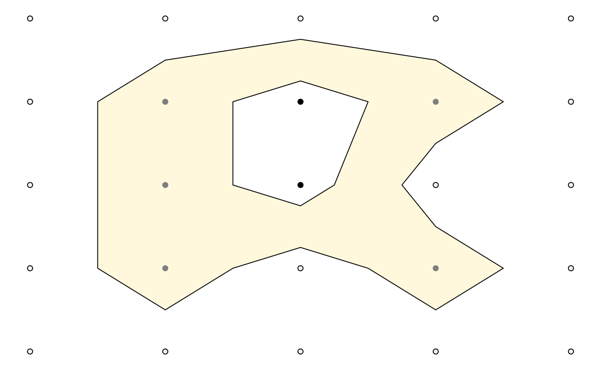

Generating isolines and isobands
Claus O. Wilke
2022-12-20
Source:vignettes/isoband1.Rmd
isoband1.RmdThe isoband package implements fast algorithms for generating isolines (lines of equal elevation) and isobands (ranges of elevation delimited by two isolines) from a matrix of elevation data. For both cases, the package employs the marching squares algorithms as described on Wikipedia. Marching squares algorithms break down the elevation matrix into blocks of 2x2 elevation values. For each block, they then determine the appropriate isolines/isobands from a lookup table of all possible arrangements of isolines or isobands within a 2x2 block. There are 16 distinct possibilities for isolines and 81 for isobands. The implementation in the isoband package goes beyond the algorithm described on Wikipedia in that it merges the isolines or isobands from separate blocks into extended line traces or polygons. The package is meant as a low-level package with minimal required dependencies. Therefore, many of the functions provided may not immediately be useful to endusers, but they will enable developers of other packages to integrate isolines and isobands into their feature set.
The two main functions of the package are called
isolines() and isobands(), and they have
similar user interfaces and return values. Both take a vector
x specifying the x values corresponding to the columns of
the elevation matrix, a vector y specifying the y values
corresponding to the rows of the elevation matrix, and an elevation
matrix z. The two functions differ in that
isolines() takes a single argument levels
specifying the elevation levels for which isolines should be calculated,
whereas isobands() takes two arguments,
levels_low and levels_high, specifying the
lower and upper bounds for each isoband. The return value in both cases
is a list of lists. The outer list contains one list element for each
specified isolevel. The inner lists hold line or polygon data in the
form x, y, id as used by
grid::polylineGrob() or grid::pathGrob(). The
format has been chosen for easy drawing of the resulting values via
these two grid functions.
library(isoband)
library(grid)
m <- matrix(
c(0, 0, 0, 0, 0,
0, 1, 2, 1, 0,
0, 1, 2, 0, 0,
0, 1, 0, 1, 0,
0, 0, 0, 0, 0),
5, 5, byrow = TRUE
)
lines <- isolines(x = 1:ncol(m)/6, y = nrow(m):1/6, z = m, levels = 0.5)
lines
#> $`0.5`
#> $`0.5`$x
#> [1] 0.6666667 0.5833333 0.5000000 0.4166667 0.3333333 0.2500000 0.2500000
#> [8] 0.2500000 0.3333333 0.5000000 0.6666667 0.7500000 0.6666667 0.6250000
#> [15] 0.6666667 0.7500000 0.6666667
#>
#> $`0.5`$y
#> [1] 0.2500000 0.3333333 0.3750000 0.3333333 0.2500000 0.3333333 0.5000000
#> [8] 0.6666667 0.7500000 0.7916667 0.7500000 0.6666667 0.5833333 0.5000000
#> [15] 0.4166667 0.3333333 0.2500000
#>
#> $`0.5`$id
#> [1] 1 1 1 1 1 1 1 1 1 1 1 1 1 1 1 1 1
#>
#>
#> attr(,"class")
#> [1] "isolines" "iso"
grid.newpage()
grid.draw(polylineGrob(lines[[1]]$x, lines[[1]]$y, lines[[1]]$id))
bands <- isobands(x = 1:ncol(m)/6, y = nrow(m):1/6, z = m, levels_low = 0.5, levels_high = 1.5)
bands
#> $`0.5:1.5`
#> $`0.5:1.5`$x
#> [1] 0.6666667 0.5833333 0.5000000 0.4166667 0.3333333 0.2500000 0.2500000
#> [8] 0.2500000 0.3333333 0.5000000 0.6666667 0.7500000 0.6666667 0.6250000
#> [15] 0.6666667 0.7500000 0.5000000 0.5416667 0.5833333 0.5000000 0.4166667
#> [22] 0.4166667
#>
#> $`0.5:1.5`$y
#> [1] 0.2500000 0.3333333 0.3750000 0.3333333 0.2500000 0.3333333 0.5000000
#> [8] 0.6666667 0.7500000 0.7916667 0.7500000 0.6666667 0.5833333 0.5000000
#> [15] 0.4166667 0.3333333 0.4583333 0.5000000 0.6666667 0.7083333 0.6666667
#> [22] 0.5000000
#>
#> $`0.5:1.5`$id
#> [1] 1 1 1 1 1 1 1 1 1 1 1 1 1 1 1 1 2 2 2 2 2 2
#>
#>
#> attr(,"class")
#> [1] "isobands" "iso"
grid.newpage()
grid.draw(pathGrob(bands[[1]]$x, bands[[1]]$y, bands[[1]]$id, gp = gpar(fill = "cornsilk")))A convenience function plot_iso() can be used to inspect
a single isoband and corresponding isolines for an elevation matrix.
This function is mostly meant for debugging and illustration purposes.
It draws a grid of matrix points colored by whether each point is below,
within, or above the isoband, as well as the isoband itself and the
enclosing isolines.
plot_iso(m, 0.5, 1.5)
The isoband package handles NA values in the matrix by
simply ignoring the respective grid points.
m <- matrix(
c(NA, NA, NA, 0, 0, 0,
NA, NA, NA, 1, 1, 0,
0, 0, 1, 1, 1, 0,
0, 1, 1, 0, 0, 0,
0, 0, 0, 1, 0, 0,
0, 0, 0, 0, 0, 0),
6, 6, byrow = TRUE
)
plot_iso(m, 0.5, 1.5)
Isobands can contain holes, as shown above, and they can also consist of multiple disconnected pieces.
m <- matrix(
c(0, 0, 1, 1,
0, 1, 1, 1,
1, 1, 0, 0,
0, 0, 0.8, 0),
4, 4, byrow = TRUE
)
plot_iso(m, 0.5, 1.5)
Performance
The code is written in C++ and performance is generally good.
Isolining is about as fast as grDevices::contourLines(),
isobanding is approximately 2.5 times slower.
# contouring with contourLines() from grDevices
fn_contourLines <- function() {
grDevices::contourLines(1:ncol(volcano), 1:nrow(volcano), volcano, levels = 10*(10:18))
}
# contouring with isolines()
fn_isolines <- function() {
isolines(1:ncol(volcano), 1:nrow(volcano), volcano, 10*(10:18))
}
# contouring with isobands()
fn_isobands <- function() {
isobands(1:ncol(volcano), 1:nrow(volcano), volcano, 10*(9:17), 10*(10:18))
}
microbenchmark::microbenchmark(fn_contourLines(), fn_isolines(), fn_isobands())
#> Unit: milliseconds
#> expr min lq mean median uq max neval
#> fn_contourLines() 1.5556 1.58715 2.047953 1.61290 2.60835 7.6248 100
#> fn_isolines() 1.2293 1.27815 1.334637 1.29495 1.32805 4.3996 100
#> fn_isobands() 3.1097 3.15860 3.391101 3.18945 3.23215 20.5885 100